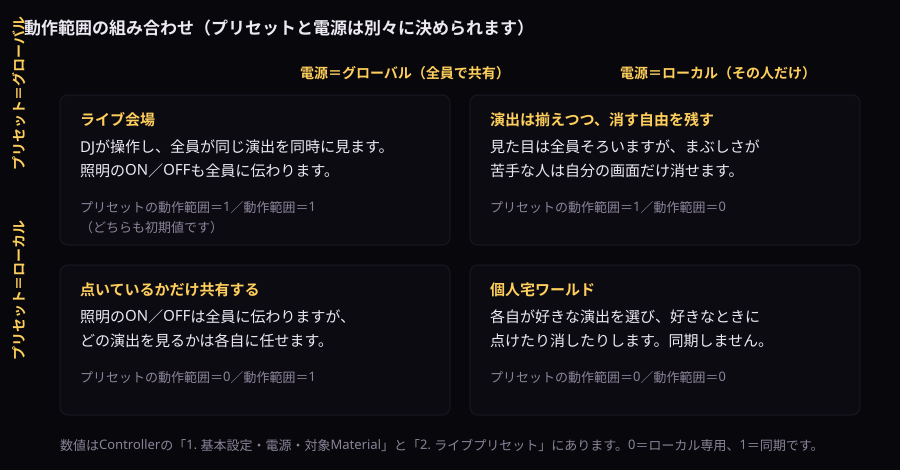
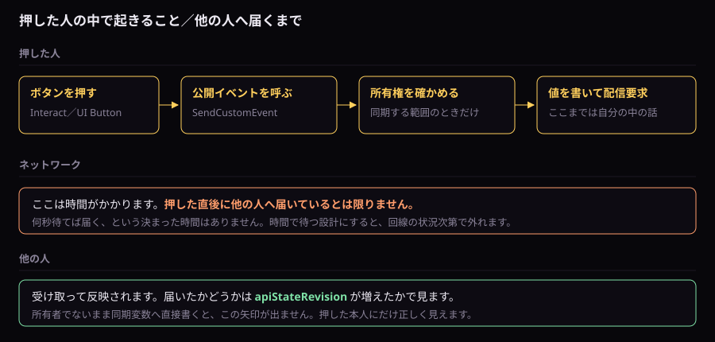

このページの前提
イベント名と結果コードの一覧はプリセットの「他のUdonから操作する（外部制御API）」にあります。先にそちらを読んでください。 このページはその一覧を使って何を組み立てられるか、という話です。
このページに出てくるコードはUdonSharp（U#）です。UdonSharpの導入とスクリプトの作り方そのものは扱いません。
このページの図は模式図です。 Inspectorの見た目そのものではありません。項目名は実物と合わせてあります。
SendCustomEvent は名前を文字列で呼びます。名前を変えると、それを呼んでいるワールドがエラーも出さずに静かに壊れます。共通の下ごしらえ
以下のレシピはすべて、Controllerへの参照を持ったUdonBehaviourから始まります。まずこれを作ります。
- Hierarchyで空のGameObjectを作ります。名前は
MirrorBallRemoteなど、役割が分かるものにします。 - 新しいU#スクリプトを作り、そのGameObjectへ付けます。
- スクリプトへ
public UdonBehaviour mirrorBall;を宣言します。 - Inspectorに現れた Mirror Ball の欄へ、Controllerが付いているGameObjectをHierarchyからドラッグします。
mirrorball（回転Root）ではありません。ここを間違えると、実行するまで気づけません。設定済みサンプルなら MirrorBallLight_ConfiguredSample がその位置です。参照が取れているかは、Play Modeに入って一度だけ TogglePower を呼べば分かります。何も起きなければ参照先が違います。
ボタンで電源を切り替える
まず、スクリプトが要るかを確かめる
ミラーボール自体をクリックして点け消しするだけなら、スクリプトは要りません。
| Controllerの場所 | 項目 | 設定 |
|---|---|---|
| 1. 基本設定・電源・対象Material | このオブジェクトをクリックして切替 | ON（初期値） |
| 1. 基本設定・電源・対象Material | 電源状態 | 初期状態をここで決めます |
| 1. 基本設定・電源・対象Material | 電源フェード時間（秒） | 0にすると即座に切り替わります |
離れた場所のスイッチから切り替える
壁のスイッチなど、別のオブジェクトから操作する場合です。「共通の下ごしらえ」で作ったスクリプトへ、次を書きます。
public override void Interact()
{
mirrorBall.SendCustomEvent("TogglePower");
}- スイッチにするGameObjectへColliderを付けます。 これが無いとクリックできません。Colliderのほかに、オブジェクトが有効であること、手が届く距離にあること、
public override void Interact()の形が正しいことも必要です。 - 上のスクリプトをそのGameObjectへ付けます。
- Mirror Ball の欄へControllerを入れます。
- ミラーボール側の「このオブジェクトをクリックして切替」はOFFにします。両方を生かすなら、役割を分けてください。 例えば本体クリックは
TurnOffだけ、壁のスイッチはTogglePower、といった分け方です。どちらもTogglePowerにすると、二重に反応したときに状態が逆転します。
Unity UIのButtonから呼ぶ場合は、スクリプトを書かずにButtonの On Click から直接呼べます。手順はプリセットにあります。
同期範囲を設計する
プリセットと電源は、それぞれ別に「全員で共有する（グローバル）」か「その人だけ（ローカル）」かを選べます。2つは独立しているので、組み合わせは4通りあります。

Inspectorでの場所
| 設定したいもの | Controllerの場所 | 項目 |
|---|---|---|
| 電源の同期範囲 | 1. 基本設定・電源・対象Material | 動作範囲 |
| プリセットの同期範囲 | 2. ライブプリセット | プリセットの動作範囲 |
切り替えは専用の入口から呼ぶ
api で始まる変数」として挙げているものは、外から呼ばれる前提の入口です。 それ以外のフィールドの動きは実装の都合で変わることがあります。動作範囲はどちらも public なフィールドなので直接書き換えられますが、専用の入口から呼んでください。
| 呼ぶもの | 直接書き換えとの違い |
|---|---|
UseLocalPresetScope / UseGlobalPresetScope | 切替中の予約がその場で破棄されます。直接書き換えると次のUpdateまで残ります |
UsePowerLocalScope / UsePowerGlobalScope | 見た目にその場で反映されます。直接書き換えると次のUpdateまで遅れます |
回転角の引き継ぎ
電源の範囲をグローバルからローカルへ移すときは、そのときの回転角をローカル側が引き継ぎます。切り替えても回転が飛びません。
逆向き（ローカルからグローバル）では引き継ぎません。全員で共有している時間軸へ戻るので、そちらに合わせます。ここで引き継いでしまうと、自分の都合で他の人の見え方を動かすことになります。
自分だけ消せるようにする
演出は全員で揃えたまま、まぶしさが苦手な人には自分の画面だけ消してもらう構成です。ライブ会場でよく要る形です。
Inspectorでの設定
| Controllerの場所 | 項目 | 設定 |
|---|---|---|
| 2. ライブプリセット | プリセットの動作範囲 | 1（同期のまま。演出は揃えます） |
| 1. 基本設定・電源・対象Material | 動作範囲 | 0（ローカル専用にします） |
この2つを設定しておけば、来場者がミラーボールをクリックして消しても、他の人の画面は消えません。演出のプリセットは全員そろったままです。
実行中に切り替える場合
どうしても実行中に切り替えるなら、切り替えた後の見え方が変わりうることに注意してください。範囲ごとに点灯状態を別に持っているためです。
public UdonBehaviour mirrorBall;
public override void Interact()
{
// 自分の画面だけの扱いに移します
mirrorBall.SendCustomEvent("UsePowerLocalScope");
// 移った先が覚えている状態がそのまま出ます。
// 望む状態が決まっているなら、ここで明示的に指定します。
mirrorBall.SendCustomEvent("TurnOff");
}TurnOn / TurnOff のように結果が一意に決まるイベントで締めてください。 TogglePower で締めると、切替前の状態しだいで点いたり消えたりします。
所有権はいつ動くか
同期する設定を書き換えるときは、書く前に所有権を取ります。所有者でないまま同期変数へ書くと、押した本人の手元だけ変わり、他の人には届きません。 しかも本人には正しく見えるので気づけません。その人が後で所有者になると、ズレた値が全員へ配られます。

Networking.SetOwner を自分で呼ぶ必要はありません。必要なときだけ内部で取ります。ワールド全体で所有権を意識しなくてよい、という意味ではありません。 他のギミックの所有権は、これまでどおりそちらで扱ってください。所有権の移動はネットワーク越しの要求です。呼んだ直後に他の人の画面へ届いているとは限りません。 変化したかどうかは apiStateRevision で見てください。時間で待つと、回線の状況次第で外れます。
曲ごとに演出を出す
DJブースのボタンや、ライブ演出のタイムラインから、曲ごとに決まったプリセットを出す構成です。
Inspectorでの設定
| Controllerの場所 | 項目 | 設定 |
|---|---|---|
| 2. ライブプリセット | ライブプリセットを使用 | ON（初期値はOFFです。忘れると結果コード1が返り続けます） |
| 2. ライブプリセット | プリセット一覧 | 使う演出を並べます。ここでの並び順が番号になります |
| 2. ライブプリセット | プリセットの動作範囲 | 1（全員へ同じ演出を出す場合） |
| 2. ライブプリセット | クロスフェード時間（秒） | 曲の繋ぎに合う長さ。長くするほど切替要求が詰まりやすくなります |
| 2. ライブプリセット | 切替中の要求を1件だけ予約 | ONにすると、切替中の要求を1件だけ覚えて後で実行します |
| 2. ライブプリセット | 開始時に選択中プリセットを適用 | ワールドに入った時点の見た目を決めたいときON |
番号の指定には2つの入口があります
ここを混同すると動きません。 入口ごとに、番号を書く変数が違います。
| 入口 | 番号を書く場所 | 使う場面 |
|---|---|---|
ApplySelectedPresetApplySelectedPresetImmediately | presetSelectionIndex（Inspectorの「イベント指定用プリセット番号」） | 番号が固定のボタン。Unity UIのButtonから直接呼べます |
RequestSelectPreset | apiPresetIndex（スクリプトから書きます） | 番号を実行中に決める場合。スクリプトが要ります |
曲に合わせて番号を送るスクリプト
public UdonBehaviour mirrorBall;
public int[] presetPerTrack; // 曲ごとに出したいプリセット番号
public void OnTrackChanged(int trackIndex)
{
if (trackIndex < 0 || trackIndex >= presetPerTrack.Length) return;
mirrorBall.SetProgramVariable("apiPresetIndex", presetPerTrack[trackIndex]);
mirrorBall.SendCustomEvent("RequestSelectPreset");
int result = (int)mirrorBall.GetProgramVariable("apiLastResultCode");
if (result == 3 || result == 4)
{
// 切替中でした。失敗ではありません
Debug.Log("いまは切替中です。少し待ってから押し直してください");
}
else if (result != 0)
{
// 1 や 2 は設定側の問題です。待っても直りません
Debug.LogWarning("プリセットの設定を確認してください: " + result);
}
}打点で切り替える
曲のドロップなど、拍に合わせたい瞬間はクロスフェードを挟みません。
// クロスフェードあり
mirrorBall.SetProgramVariable("apiPresetIndex", 4);
mirrorBall.SendCustomEvent("RequestSelectPreset");
// 即座に切り替え。**書き換える変数が違います**
mirrorBall.SetProgramVariable("presetSelectionIndex", 4);
mirrorBall.SendCustomEvent("ApplySelectedPresetImmediately");presetSelectionIndex です。 apiPresetIndex ではありません。書き換える変数を間違えると、前の番号のまま切り替わります。エラーは出ません。結果を読み取って分岐する
操作しっぱなしにせず、結果を見て次を決められます。

| 読む変数 | 使い道 |
|---|---|
apiLastResultCode | 直前の操作の結果。0 が成功。失敗理由で分岐する |
apiStateRevision | 状態が変わるたびに1つ増える。前回の値と比べれば「変化したか」だけを検出できる |
UIの表示を追従させる
apiStateRevision を覚えておき、増えたときだけUIを描き直します。毎フレーム全部を読み直すより軽く済みます。
private int lastRevision = -1;
void Update()
{
int rev = (int)mirrorBall.GetProgramVariable("apiStateRevision");
if (rev == lastRevision) return;
lastRevision = rev;
RefreshMyUI(); // ここだけが状態変化のたびに走ります
}GetProgramVariable は名前を文字列で探すため、ふつうの変数参照より重い呼び出しです。禁止ではありませんが、毎フレーム何十個も読む作りは避けてください。 上のように「1つだけ読んで、変わったときだけ残りを読む」形にすると積み上がりません。3と4が返ったときに、少し待って試し直す
3 と 4 は時間が経てば通ります。自分のスクリプトの中で、間隔を置いて呼び直します。
public UdonBehaviour mirrorBall;
private int wantedIndex = 0; // 出したい番号
private int retryLeft = 0; // 残り試行回数。呼ぶ前に 3 などを入れます
public void RequestWithRetry()
{
mirrorBall.SetProgramVariable("apiPresetIndex", wantedIndex);
mirrorBall.SendCustomEvent("RequestSelectPreset");
int result = (int)mirrorBall.GetProgramVariable("apiLastResultCode");
if (result == 0) { retryLeft = 0; return; }
if (result == 3 || result == 4)
{
// 切替中でした。回数を決めて試し直します
if (retryLeft > 0)
{
retryLeft--;
SendCustomEventDelayedSeconds("RequestWithRetry", 0.5f);
}
return;
}
// 1 と 2 は設定側の問題です。**何度呼んでも同じです**
retryLeft = 0;
}1 と 2 で試し直さないのも同じ理由です。後から入ってきた人のUIを合わせる
途中参加した人のUIは、参加時点の状態を知りません。apiStateRevision の初期値を -1 にしておけば、最初のUpdateで必ず1回描き直されます。 参加のタイミングを特別扱いする必要はありません。
上のUI追従のコードがそのまま使えます。lastRevision を -1 で初期化しているのはこのためです。
失敗したときに黙って諦めない
3 と 4 は失敗ではなく「今は無理」です。 ボタンを無効表示にする、少し待って押し直させる、といった扱いが合います。1 と 2 は設定側の問題なので、待っても直りません。
複数台をまとめて操る
1つのUIから複数のミラーボールを同時に動かせます。Controllerごとに同じイベントを送ってください。

設定手順
- スクリプトへ
public UdonBehaviour[] mirrorBalls;を宣言します。 - Inspectorで配列のサイズを台数に合わせます。
- 各要素へ、それぞれのControllerをドラッグします。
- 台ごとの「プリセット一覧」の並び順と数を揃えてください。 並び順が違うと同じ番号で違う演出が出ます。数が足りない台では結果コード
2が返り、その台だけ変わりません。
public UdonBehaviour[] mirrorBalls;
public void ApplyToAll(int index)
{
for (int i = 0; i < mirrorBalls.Length; i++)
{
mirrorBalls[i].SetProgramVariable("apiPresetIndex", index);
mirrorBalls[i].SendCustomEvent("RequestSelectPreset");
}
}台ごとに違う演出を出す
送る番号を台ごとに変えれば、別々の演出を同時に出せます。左右で色を変える、奥の1台だけ遅く回す、といった使い方ができます。
public int[] indexPerBall; // 要素数は mirrorBalls と同じにします
public void ApplyPerBall()
{
for (int i = 0; i < mirrorBalls.Length; i++)
{
if (i >= indexPerBall.Length) break; // 要素数がずれていても落ちません
mirrorBalls[i].SetProgramVariable("apiPresetIndex", indexPerBall[i]);
mirrorBalls[i].SendCustomEvent("RequestSelectPreset");
}
}実行中に画質を落とす
人数が増えたときや、他の演出が重なる場面で、連携版から通常版へ落とす構成です。ワールド内の設定メニューから来場者に選ばせることもできます。

Inspectorでの設定
| Controllerの場所 | 項目 | 設定 |
|---|---|---|
| 4. ミラーボール本体ファセット | 本体表示モード（0:通常／1:照明連携） | 初期状態のモードを決めます |
| 4. ミラーボール本体ファセット | 通常版本体オブジェクト（Prefab用） | 通常版の本体球 |
| 4. ミラーボール本体ファセット | LTCGI・VRCLightVolumes版本体（Prefab用） | 連携版の本体球 |
切替のスクリプト
public void UseLightweight()
{
mirrorBall.SendCustomEvent("UseStandardLightingVariant");
}
public void UseHighQuality()
{
mirrorBall.SendCustomEvent("UseIntegratedLightingVariant");
}壁・床・ガラスのMaterialは自動では変わりません。両方のモードで見え方を確かめてください。 通常版のMaterialのまま連携版の本体へ切り替えると、本体だけが変わって周りが取り残されます。
やってはいけないこと
| やってはいけない | 理由 |
|---|---|
同期変数を SetProgramVariable で直接書く | 所有権を取らずに書くことになります。本人にだけ正しく見え、後で全員へズレが配られます。公開イベントの中でやっている整合の処理も飛ばします |
| 公開イベントの名前を変える | 呼んでいる側が静かに壊れます。エラーも出ません |
毎フレーム ApplyToMaterials を呼ぶ | 設定を変えたときだけで足りるものです。毎フレーム呼ぶとCPU側の負荷になります |
| 結果コードを見ずに投げ続ける | 切替中の要求は捨てられます。見た目上「たまに効かない」になります |
| 同じ操作の入口を役割を分けずに増やす | 本体クリックと外部スイッチの両方を TogglePower にすると、二重に反応したときに状態が逆転します |